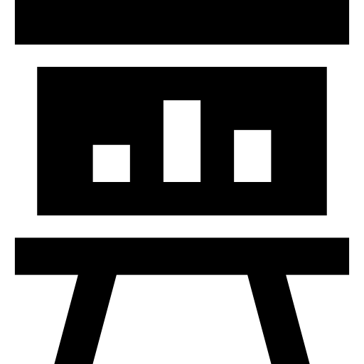

Strategy First
Focused plans shaped around clear business outcomes.
Strategy. Clarity. Momentum.
Busiqe helps ambitious organizations sharpen their strategy, strengthen operations, and turn opportunity into measurable growth.

Focused plans shaped around clear business outcomes.
Better decisions grounded in useful, measurable insight.
Practical innovation designed to create lasting value.
Execution that builds momentum and scales with confidence.

Built for meaningful progress
We bring senior thinking, commercial discipline, and hands-on delivery into one focused partnership. Every recommendation has a clear purpose: helping your organization move with confidence.
Turn complex market and operating data into a clear set of priorities.
Give leaders and teams one practical roadmap for decisions and delivery.
Translate strategy into accountable actions, measurable gains, and repeatable growth.
Outcomes that compound
Strategy matters when it changes the numbers—and makes the next decision easier.
Clear priorities and accountable owners reduce strategic drag.
Executive teams leave with one shared view of the road ahead.
Operating rhythms turn ambition into repeatable commercial progress.
Engagement models
Begin with the level of support your priorities require. Every engagement starts with a focused discovery session.
Foundation
For leadership teams that need clarity on one high-value challenge.
Momentum
For organizations ready to align strategy, operations, and growth.
Enterprise
For complex transformations across several teams or markets.
Inside the work

Connected by design
Busiqe connects strategic priorities to the systems where your people plan, communicate, sell, and measure progress.
Senior by default
Every Busiqe engagement is led by practitioners who have built, operated, and transformed real organizations.
Managing Partner · Strategy

Strategy Director · Transformation

Partner · Operations

Partner · Growth
A practical path forward
We turn the distance between today’s operating reality and tomorrow’s ambition into a sequence of clear, achievable moves.

Build one evidence-led view of the business.
Focus leaders on the few moves that matter most.
Set ownership, cadence, and measures for delivery.
FAQ
Clear thinking starts with clear expectations. Here are the practical details leaders ask before beginning a Busiqe engagement.
Ideas for the next move
Client confidence
Real leaders. Meaningful progress.
“Busiqe gave our leadership team the clarity to choose, commit, and move. We stopped debating priorities and started delivering them.”Aisha MonroeChief Strategy Officer · Meridian Group
“The work was practical from day one. Every session ended with sharper decisions, named owners, and visible momentum.”Jeff MerriwetherChief Operating Officer · Northline
“Busiqe connected customer insight, commercial priorities, and execution in a way our whole organization could act on.”Chloe DeckerManaging Director · Forefront
Built around your priorities
Sharper positioning and a practical roadmap for profitable growth.
Focused demand programs that connect audience, offer, and action.
Clear digital journeys built around customer intent and conversion.
Distinctive identity and messaging that make decisions easier.
Roles, rhythms, and measures that turn strategy into delivery.
Decision-ready reporting for the metrics leaders need most.
Hands-on leadership support through complex organizational change.
Experience and retention strategies that compound lifetime value.
Managing Partner
Strategy Director
Operations Partner
Growth Partner
Evidence from complex business decisions.
A fragmented reporting estate made it difficult for leaders to see performance clearly. Busiqe aligned the data model, decision cadence, and executive experience around the few signals that could change outcomes.
Multiple markets, inconsistent metrics, and slow executive reporting.
One trusted performance model and a decision-ready analytics experience.
Faster interventions, clearer ownership, and sustained margin improvement.


Our standards
Built together
Bring your hardest business challenge. We will bring the structure, senior attention, and practical momentum.
We turn ambition into a focused portfolio of strategic choices and measures.
Clarify where to play, how to win, and what to fund.
Ground growth choices in customer and market evidence.
Testimonial
“Working with Busiqe was a game-changer for our business. Their strategic insights helped us navigate change and unlock new opportunities.”Robert LongCOO · Frontier Group
Clarity by design
Thoughtful work moves faster when people understand the sequence, the evidence, and the decision expected at every step.

Start the conversation
Our advisory team will follow up within one business day.
About us
Business advantage comes from connecting insight, experience, and execution. We help leadership teams turn complex markets and operating realities into focused, measurable progress.
Where we work
Repositioning commercial portfolios, customer propositions, and operating models around resilient value creation.
Connecting growth, risk, customer experience, and operational resilience across complex financial institutions.
Improving commercial focus, operating performance, and investment choices across industrial value chains.
Designing scalable service models that balance patient outcomes, workforce needs, and financial sustainability.
Turning network, customer, and operating data into faster decisions and more reliable delivery performance.
Testimonials
Busiqe transformed our entire operating model. Their team is strategic, creative, and relentlessly focused on outcomes.
We left every working session with sharper choices, named owners, and more confidence in the path ahead.
The strategy was ambitious, but the delivery rhythm made it practical. Our organization moved together from week one.
How we work
Four connected disciplines turn an ambitious idea into a distinctive, market-ready business experience.
A brand system built to be remembered, trusted, and used consistently.
We design meaningful, not just quick, impressions.
Strategy and craft move together from the first conversation to launch day.
Company announcement
Our new alliance expands the strategy, technology, and operating expertise available to leaders navigating cross-border transformation.
Connected ecosystem
Our partner network supports more than 40 certified connectors, so teams keep the systems they trust while gaining one clear operating view.
Selected engagements
Explore a concise portfolio of transformation programs. Select a story to reveal its defining result.
Why Busiqe
Choose the situation closest to yours to see where a focused advisory program can create momentum first.
Selected path: Scaling organizations
Delivery process
Six practical stages keep discovery, decisions, creation, and adoption connected from start to finish.
We combine interviews, market evidence, and operating data into a shared fact base.
Key people
Our senior advisors stay close to the work—combining sector depth, transformation experience, and a practical commitment to building capability inside every client team.
Julian helps executive teams turn complex portfolios into clear growth choices and accountable operating plans.
Advisory portfolio
Selected capability: Portfolio planning

All in one place
From strategic choices to operating delivery, Busiqe brings the expertise, evidence, and hands-on partnership leaders need to create measurable progress.
Julian SmithManaging Partner
Our firm
We combine rigorous strategy, practical design, and embedded delivery so leaders can move from uncertainty to measurable momentum.
One viewStrategy to delivery
Maya PatelChief Strategy Officer“Busiqe gave us the clarity to stop debating options and start building the operating system our growth required.”
Jonas BeckerPresident, EMEA“The work was ambitious and practical at the same time. Every recommendation came with an owner and a delivery path.”
Elena GarciaChief Growth Officer“Our teams now share one commercial language, one set of priorities, and far more confidence in the decisions ahead.”
Noah WilliamsChief Operating Officer“They stayed close through implementation and transferred the capability to our people, not just the presentation.”
12+years of transformation experience
Built with you
Scale with confidence
Growth creates new choices and new friction. We help leadership teams preserve what makes the business distinctive while building the systems needed for the next horizon.
Frequently asked
We focus on enterprise growth, strategy, operating model, transformation, technology, and organization questions where choices and execution must move together.
Most focused programs run eight to sixteen weeks, with larger transformations delivered in clear waves and measurable decision gates.
Yes. We work alongside accountable owners, establish the delivery rhythm, and transfer capability so progress continues after the engagement.
Absolutely. We clarify roles and integrate specialist partners into one decision model, evidence base, and delivery plan.
We define a small set of business, behavior, and delivery measures at the start and review them with owners throughout the work.
Access to the right evidence, candid participation in key decisions, and named leaders who will own the resulting priorities and actions.
Transformation case
Connected capabilities
01 · Select priorities
Clarify which businesses, markets, and initiatives deserve resources now—and which options should remain open.
02 · Prioritize
Track choices from signal to action with an evidence trail leaders and delivery teams can understand.
03 · Execute
Reduce repetitive coordination and give teams more time for judgment, customer work, and improvement.
04 · Adapt
Connect real performance with forward-looking scenarios so leaders can respond before variance becomes drift.
Your trusted advisors
Our seasoned professionals combine deep experience with a practical commitment to your goals—helping teams create growth, innovation, and lasting operational strength.
Our work
How we work
We unite commercial strategy, brand thinking, and operating expertise around one goal: helping leadership teams turn ambition into measurable momentum.
faster leadership decisions after one aligned operating sprint.
Explore partnership stories Trusted relationships
People, not playbooks
You do not need another polished deck that leaves the hard questions untouched. You need partners who listen closely, name what matters, and stay beside your team until the answer works in practice.
One leadership team. Six operating units. A single twelve-month plan that restored confidence, accelerated delivery, and returned the business to durable growth.
About us
Busiqe overview
Busiqe · Transaction advantage
Cross-sector pattern recognition reveals hidden constraints and transferable sources of value.
One integrated plan aligns diligence, leadership, customers, and first-100-day execution.
Specialist expertise can be activated quickly wherever the transaction needs additional depth.
Clear value cases, accountable owners, and measurable milestones protect momentum after close.
Beyond recommendations
We combine strategy, creative problem-solving, and hands-on delivery so the work moves from boardroom ambition to measurable operating results.
Why Busiqe
The people you meet at the start remain accountable through delivery.
Practical methods turn complex choices into focused decisions and action.
Every roadmap reflects your economics, culture, constraints, and ambition.
Leaders can surface difficult truths and solve them without theatre.
Rad work
experience
Other important
stuff
Move with clarity
Complex transformations become manageable when the next decision is clear, owners are aligned, and progress is visible.
Our approach
Busiqe integrates leadership systems, market growth, and process improvement so organizations can move faster without losing rigor.
Build leadership, decision rights, and capabilities that scale with ambition.
Identify where to compete, how to win, and which investments create momentum.
Connect strategy to simpler workflows, stronger accountability, and performance.
See investment, delivery, and commercial performance through one shared decision view.
Who we are
Growth OS / liveConnected by design
Clear decision rights, controls, and visibility protect momentum as scale increases.
One commercial system connects markets, offers, customers, and investment choices.
120+Senior multidisciplinary teams mobilized around outcomes, not handoffs.
Social proof
“Busiqe gave us instant visibility into our pipeline and helped our team move from debate to focused action faster.”Daniel ReedChief Operating Officer · Northline
What we do
Make the few choices that matter most and connect them to measurable outcomes.
Translate decisions into accountable roadmaps, capability, and operating rhythm.
Track leading signals, learn quickly, and adapt before performance moves off course.
Senior value
Senior from day oneThe people in the room own the thinking and stay through delivery.
Flexible by designScale the team and cadence to match the decision, not a fixed pyramid.
Value you can seeEvery workstream ties to an outcome, owner, signal, and measurable move.
Why Busiqe
Uncover what is not known, remove friction, and give leadership one practical system for moving from insight to measurable progress.
Turn live signals into accountable next moves without waiting for another cycle.
Bring market, customer, and operational evidence into one decision context.
Connect strategy, experience, product, and commercial execution across teams.
See why performance is moving and which interventions can change the trajectory.
Separate noise from evidence and focus investment on the moves that matter.
Add governance and capability at the pace the business truly needs them.
Built to flex
Create a central place for leaders to connect, learn, align, and turn shared ambition into action.
We identify the audiences, offers, and moments where sharper focus creates disproportionate value.
Designed for decisions
One senior team brings strategy, evidence, design, and delivery together—so progress never gets lost between specialists.
Performance claritySee the few signals shaping growth.
Digital transformationConnect technology to real behavior.
Operational resilienceBuild systems that learn under pressure.
Growth architectureScale choices, capability, and ownership.
96%of leaders report clearer decisionsCommitted to outcomes
Our work combines commercial judgment, multidisciplinary craft, and hands-on delivery to turn difficult choices into lasting capability.
Independent by design
Proof in practice
“They made a complex transformation feel focused, human, and possible.”
Priya Desai · CEOEnterprise intelligence
Move from fragmented reporting to a shared system for decisions, automation, and measurable value.

Frame the question, evidence, trade-offs, and accountable next move.
Use AI where it improves judgment, speed, and customer outcomes.
Remove routine coordination while preserving control and context.
Connect live signals to priorities leaders and teams can act on.
Growth operating system
Bring priorities, evidence, ownership, and delivery signals into one view built for leaders and teams.
Executive workspace
Connected signals make exceptions visible before momentum drifts.
Strategy that travels
Find the few constraints and opportunities changing the trajectory.
Make trade-offs visible, evidence-based, and collectively owned.
Build the rhythm and capability that sustain progress.
Move from recommendations to repeatable capability.Senior advisors stay close through the moments that matter.
Independent adviceCommercial clarity without hidden incentives.
Financial confidence
Our finance and performance specialists make value, risk, and opportunity easier to see—then help accountable teams act on what matters.
Special features
One visible decision thread across functions, partners, and workstreams.
Short feedback loops turn evidence into practical moves quickly.
Governance and capability grow only when the business needs them.
Clear access, responsibility, and controls protect decision quality.
Solutions for your business
Signals, scenarios, and choices for confident commercial direction.
Decision rights, workflow, governance, and capability built to scale.
Useful products that connect teams, customers, data, and execution.
Distinctive strategy and experience that make value easier to choose.
Ready to turn growth signals into a focused decision system?